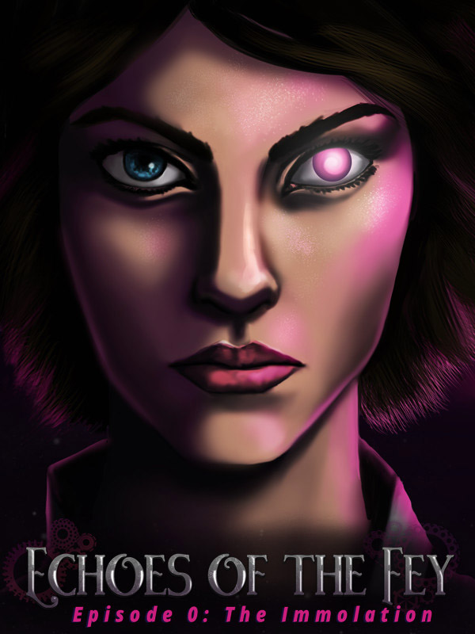

Echoes of the Fey Episode 0: The Immolation
Echoes of the Fey Episode 0: The Immolation
Details
|  | |
| Playtime | 1m 0s |
| Last Activity | 13/05/2019 3:41:02 |
| Added | 13/04/2018 |
| Modified | Never |
| Completion Status | Played |
| Source | Steam |
| Platform | PC |
| Release Date | 07/02/2017 |
| Community Score | 73 |
| Critic Score | |
| User Score | |
| Genre | Adventure Free to Play Indie |
| Developer | Woodsy Studio |
| Publisher | Woodsy Studio |
| Feature | Achievements Captions Available Partial Controller Support Single Player Trading Cards |
| Links | PCGamingWiki Community Hub Discussions Guides Achievements Store Page News |
Description

Imagine being the only survivor of an explosion that kills thousands of people. That is the fate of Sofya Rykov. And survival is just the beginning of her tale...
***
NOTE: This game uses 3D graphics and lighting. Please check Minimum Specifications before playing to ensure a good experience
***
Episode 0: The Immolation is a free, standalone chapter in the Echoes of the Fey adventure game/visual novel series. This installment will serve as an introduction to players new to the series and provide important backstory to players who enjoyed Echoes of the Fey Episode 1: The Fox's Trail, already released on Steam. Play as Sofya Rykov, before she became a private investigator and before she was cursed with unstable magic powers. An officer in the Imperial Army, Sofya is tasked with guarding Leshin prisoners at Onigrad, a city which will soon become famous for its fiery destruction.

- 3d environments and dynamic camera angles via our new UE4 implementation
- English voice acting (expression lines)
- Over 1 hour of story with multiple choice branches
- Soundtrack featuring new songs and remixes of Episode 1 tracks reflecting the dread of the Immolation of Onigrad
- A free introduction to a series which will span multiple episodes
- Achievements and trading cards

In the last days of the long war between Humans and Leshin, a tense stalemate has emerged. For years, Leshin have lain siege to the Humans over their use of Fey reactors, massive machines that draw electricity from the realm of magic. Both sides tire after almost thirty years of war, and perhaps peace is now in reach. But Leshin extremists, desperate for a victory to reclaim their power among the people, are about to stage a devastating attack that will change the world forever.
Echoes of the Fey is a series of detective stories set in the high fantasy world of Oraz. Episode 0: The Immolation takes place before the protagonist, Sofya Rykov, becomes a private investigator. She is an officer in the Imperial Human army who believes she has secured a safe position as a prison guard in the metropolitan city of Onigrad. One fateful night, one of the Leshin assigned to her begins to act strangely. And then a massive boom rings out from the Onigrad Fey reactor...
Episode 0 is an adventure game/visual novel with dialog trees and several choices for Sofya that will affect the way the story plays out. Sofya will also be able to walk around the prison and learn more about the world from her prisoners, though with an impending disaster about to hit the prison, she will have to balance how to use her time before staging her escape.